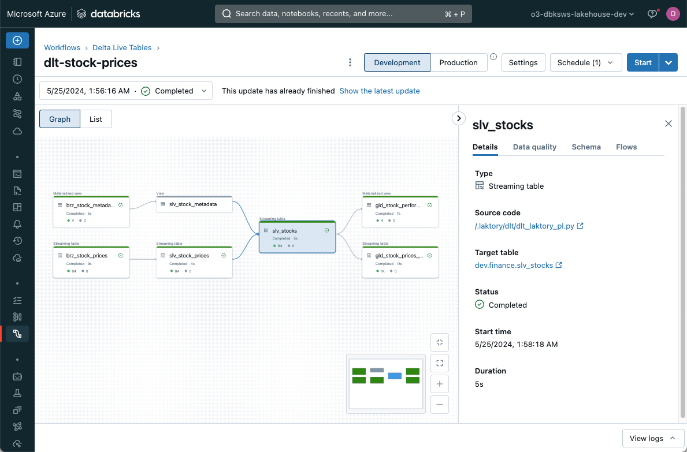
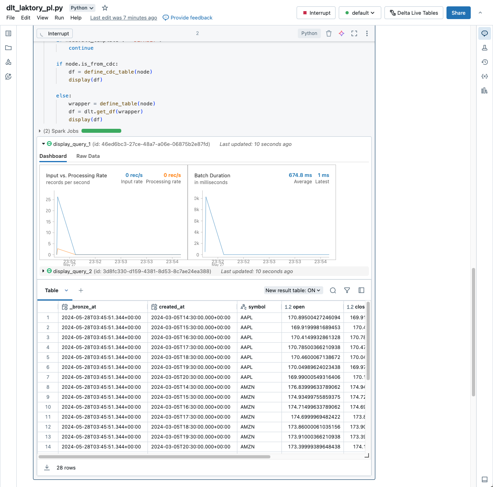
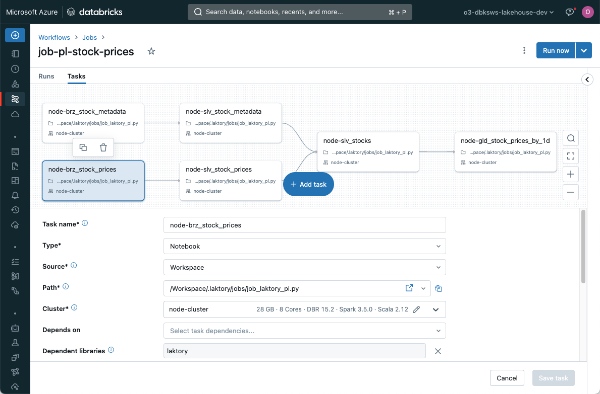

Pipeline
API Documentation
The Pipeline model is the cornerstone of Laktory. It specifies the process of reading, transforming, and writing data.

A pipeline is structured as a sequence of nodes. Each node generates a Spark or Polars dataframe by reading a source, applying transformations, and optionally writing the output to a sink.

As any other Laktory resource, a pipeline is defined from a YAML configuration file.
name: stock_prices
nodes:
- name: brz_stock_prices
layer: BRONZE
source:
path: "./events/stock_prices"
sink:
schema_name: finance
table_name: brz_stock_prices
transformer:
nodes: []
- name: slv_stock_prices
layer: SILVER
source:
node_name: brz_stock_prices
sink:
schema_name: finance
table_name: brz_stock_prices
transformer:
nodes:
- func_name: select
func_args:
- timestamp
- symbol
- open
- close
- high
- low
- volume
- func_name: drop_duplicates
func_kwargs:
subset:
- symbol
- timestamp
...
Sources and Sinks¤


Laktory supports a variety of sources and sinks, including data files and data warehouse tables. By designating a node as the source for another downstream node, you create dependencies between nodes, enabling the construction of a directed acyclic graph (DAG).
Transformer¤

Transformations are defined through a chain of Spark (or Polars) function calls, offering a highly scalable, flexible, and customizable framework. Usage of Spark and Spark Streaming also enables streaming operations.
Serialization¤
The entire pipeline definition is serializable, ensuring high portability for deployment on remote compute environments. This feature makes Laktory an ideal candidate for a DataOps approach using infrastructure as code.
Layers¤
A pipeline node allows you to select the target medallion architecture
layer (BRONZE, SILVER, GOLD). Basic transformations are automatically
preset based on the selected layer. For example, SILVER dataframes will,
by default, drop source columns and duplicates.
Orchestrators¤
The pipeline.execute() command allows you to run your data transformations
either locally or on a remote server. It processes each node sequentially,
reading data from the source, applying transformations, and writing to the
sink if applicable. It supports streaming operations through Apache Spark
Structured Streaming
, various output formats and write modes through sink configuration.
However, choosing an orchestrator can unlock more advanced features such as parallel processing of nodes, automatic schema management, and historical re-processing. You can select and configure the desired orchestrator directly within the pipeline configuration.
- name: stock_prices
nodes: ...
orchestrator: DLT
dlt:
catalog: dev
target: finance
configuration:
pipeline_name: dlt-stock-prices
clusters:
- name : default
node_type_id: Standard_DS3_v2
autoscale:
min_workers: 1
max_workers: 2
libraries:
- notebook:
path: /.laktory/dlt/dlt_laktory_pl.py
The choice of orchestrator determines which resources are deployed when
running the laktory deploy CLI command.
Delta Live Tables (DLT)¤
Databricks Delta Live Tables is the recommended orchestrator as it provides the most feature-rich experience. Key features include automatic schema change management, data quality checks, continuous execution, error handling, failure recovery, and autoscaling.

A Laktory pipeline integrates with DLT by executing each node inside a
dlt.table() or dlt.view() decorated function and returning the output
dataframe.
In the context of DLT, node execution does not trigger a sink write, as this
operation is managed by DLT. When a source is a pipeline node,
dlt.read() and dlt.read_stream() functions are called to ensure
compatibility with the DLT framework.
from laktory import dlt
from laktory import models
with open("pipeline.yaml") as fp:
pl = models.Pipeline.model_validate_yaml(fp.read())
def define_table(node):
@dlt.table_or_view(
name=node.name,
comment=node.description,
as_view=node.sink is None,
)
@dlt.expect_all(node.warning_expectations)
@dlt.expect_all_or_drop(node.drop_expectations)
@dlt.expect_all_or_fail(node.fail_expectations)
def get_df():
# Execute node
df = node.execute(spark=spark)
# Return
return df
return get_df
# Build nodes
for node in pl.nodes:
wrapper = define_table(node)
df = dlt.get_df(wrapper)
display(df)
Notice how dlt module is imported from laktory as it provides additional
debugging and inspection capabilities. Notably, you can run the notebook in a
user cluster and will be able to inspect the resulting dataframe.

Databricks Job¤
A Databricks Job is another great orchestration mechanism. In this case, Laktory will create a task for each node, enabling parallel execution of nodes. Each reading and writing operation is entirely handled by Laktory source and sink.

The supporting notebook simply needs to load the pipeline model and retrieve the node name from the job.
dbutils.widgets.text("pipeline_name", "pl-stock-prices")
dbutils.widgets.text("node_name", "")
from laktory import models
from laktory import settings
# --------------------------------------------------------------------------- #
# Read Pipeline #
# --------------------------------------------------------------------------- #
pl_name = dbutils.widgets.get("pipeline_name")
node_name = dbutils.widgets.get("node_name")
filepath = f"/Workspace{settings.workspace_laktory_root}pipelines/{pl_name}.json"
with open(filepath, "r") as fp:
pl = models.Pipeline.model_validate_json(fp.read())
# --------------------------------------------------------------------------- #
# Execution #
# --------------------------------------------------------------------------- #
if node_name:
pl.nodes_dict[node_name].execute(spark=spark)
else:
pl.execute(spark=spark)
Apache Airflow¤
Supporting Apache Airflow as an orchestrator is currently under development and will be released soon.
Streaming¤
The event-based and kappa architectures promoted by Laktory are well-suited for Spark Structured Streaming. This real-time data processing framework enables continuous, scalable, and fault-tolerant processing of data streams.
By setting as_stream: True in a pipeline node data source, the resulting
dataframe will be streaming in nature, processing only new rows of data at
each run instead of re-processing the entire dataset.
Streaming does not mean the pipeline is continuously running. Execution can
still be scheduled, but each run is incremental. Currently, the only way to
deploy a continuously running pipeline is by selecting the Delta Live Tables
orchestrator with continuous: True.
For more information about streaming data, consider reading this blog post.